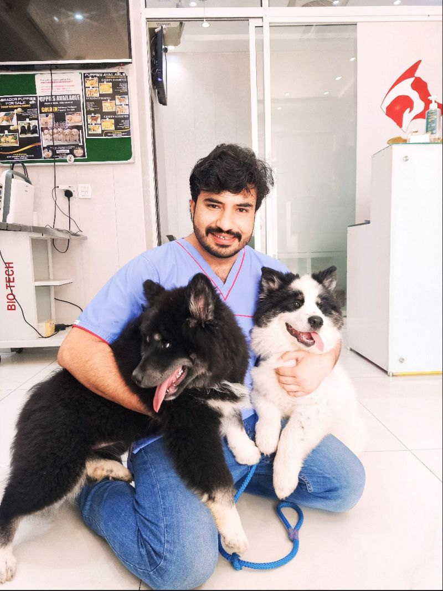

Small Animal Medicine & Surgery
Dr. Fahad Aziz
DVM - Founder & Chief Veterinarian
Dr. Fahad founded Fahad Pets Clinic in 2016 after completing his DVM at Cornell University and a clinical internship at UPenn. He specializes in soft tissue surgery, diagnostic imaging, and integrative veterinary medicine. His Fear Free® certification ensures every patient visit is as stress-free as possible.